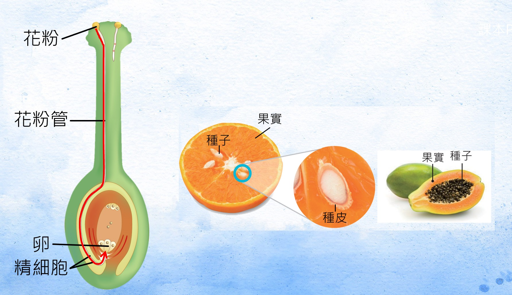
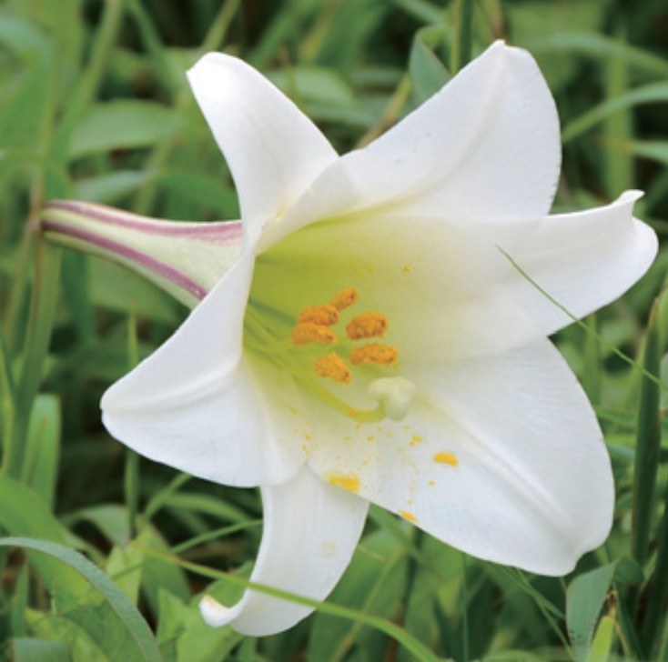
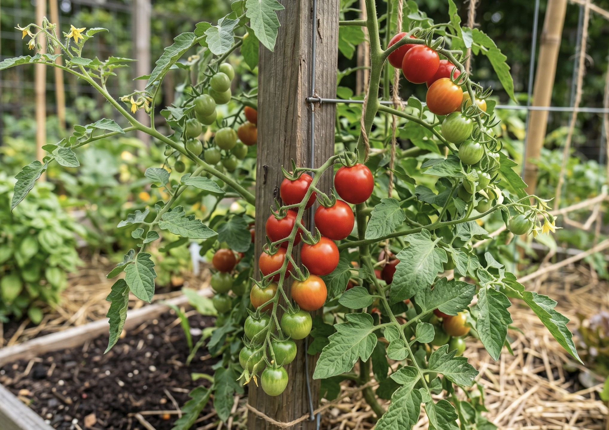
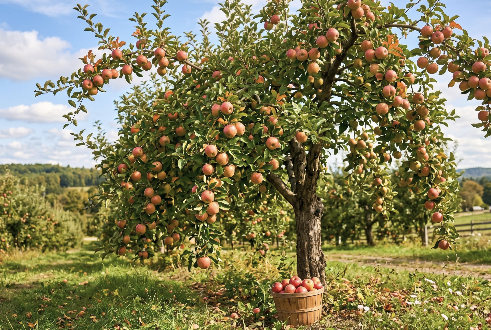
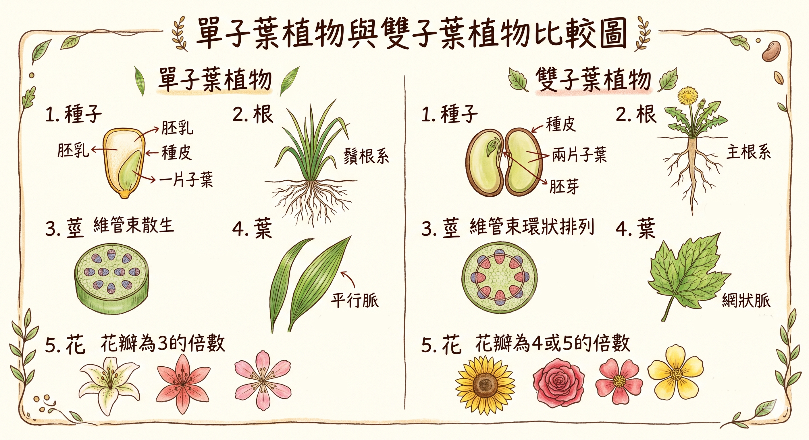

被子植物是植物界中非常常見的一大群，具有維管束， 並以種子繁殖。
它們和裸子植物最大的不同，是被子植物會形成花與果實， 種子會包在果實裡。
被子植物屬於種子植物，有維管束， 會形成花和果實， 種子包在果實裡。
互動任務：哪一句最符合被子植物？
請選出最正確的描述。
被子植物和裸子植物都屬於種子植物，也都有維管束， 最大差別在於種子是否包在果實裡。
互動任務：先點描述卡，再點左邊類別完成配對
三組都配對完成後，才能檢查答案。
被子植物會形成花。完成受精後，胚珠發育成種子， 子房則發育成果實。

互動任務：把被子植物的生殖過程排成正確順序
請用上下移動調整順序，再按檢查答案。
常見的被子植物有向日葵、百合、番茄和蘋果樹。
互動任務：先翻完卡片，再回答問題
把卡片都看過後，選出正確敘述。
點一下翻面
會開花結果，是常見的被子植物代表。

點一下翻面
有明顯的花，也是被子植物。

點一下翻面
果實裡包著種子，屬於被子植物。

點一下翻面
會形成果實，種子包在果實裡。
果實不只包住種子，也常幫助種子保護與傳播。
情境任務
小美發現有些植物的果實甜甜的，會吸引動物來吃。她想知道果實對種子有什麼幫助。
被子植物可分成單子葉植物和雙子葉植物。 請根據表格中的提示，替各欄位選出正確內容。

互動任務：完成表格配對
橫向與縱向標題固定，請用下拉選單完成表格內容。
| 子葉 | 葉脈 | 花瓣 | 維管束 | 形成層 | 根系 | |
|---|---|---|---|---|---|---|
| 雙子葉 | ||||||
| 單子葉 |
被子植物還可以再分成單子葉植物和雙子葉植物。
互動任務：替每種植物選出正確分類
每列都要選好，才能檢查答案。
現在你已經認識蘚苔植物、蕨類植物、裸子植物和被子植物，可以把它們放回正確分類了。
互動任務：替每種植物選出正確分類
每列都要選好，才能檢查答案。
來把這一頁最重要的觀念整理成一張簡單的身分證。
互動任務：完成被子植物身分證
每一欄都要選出正確答案。